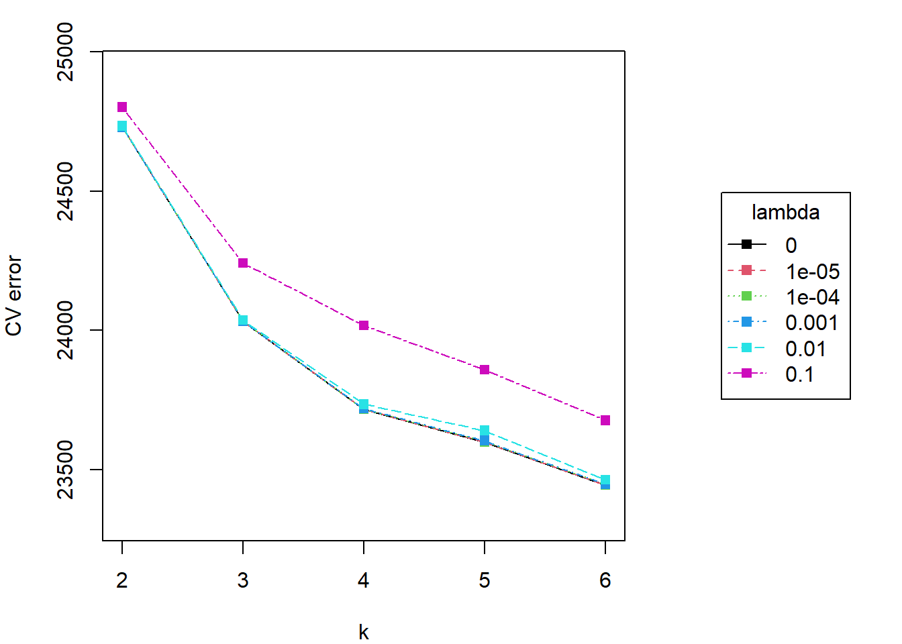
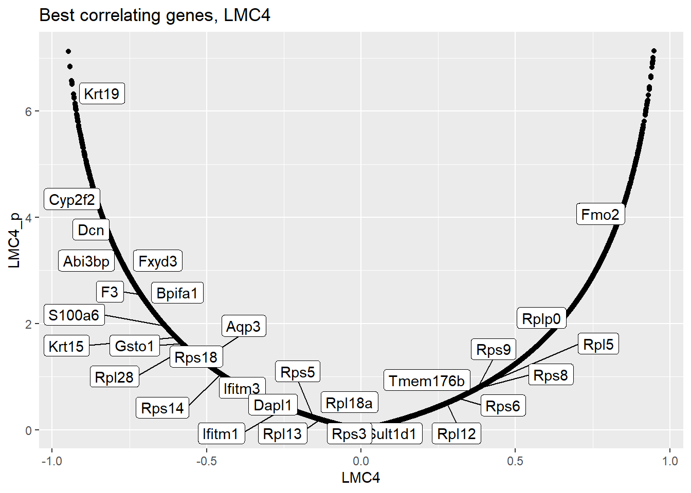
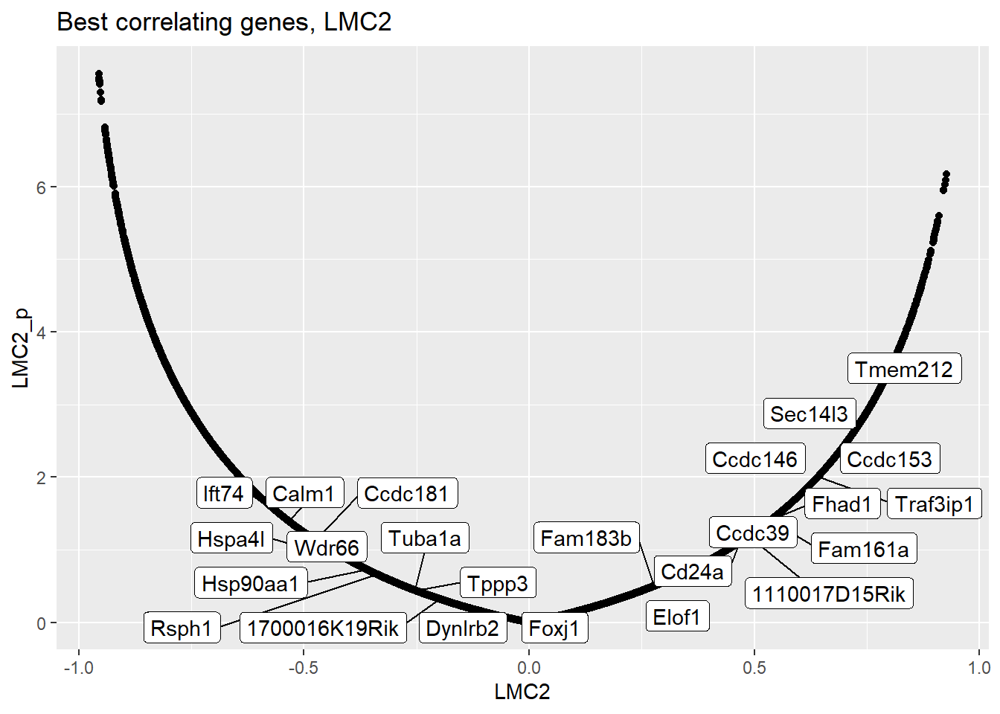
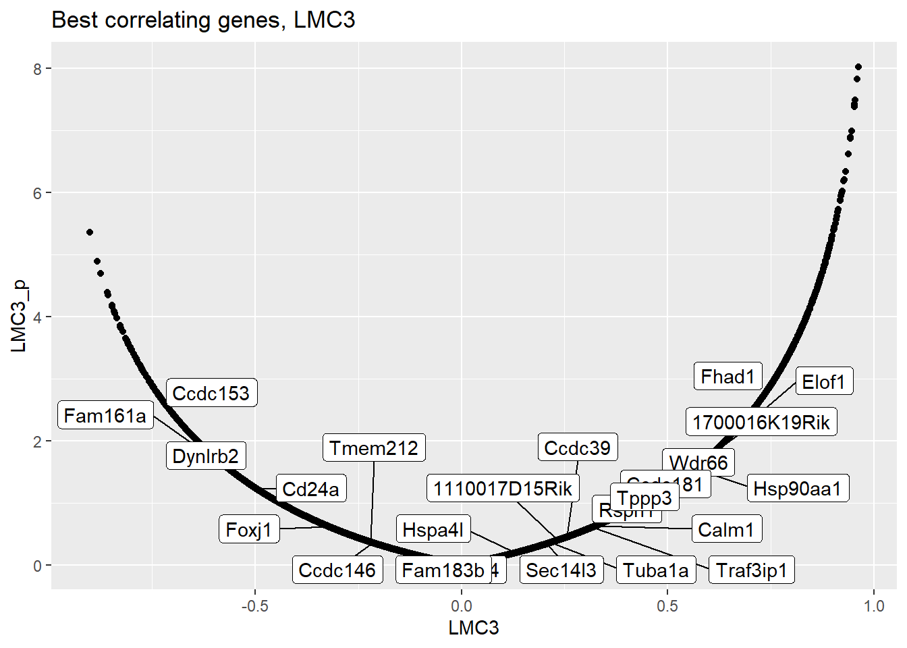
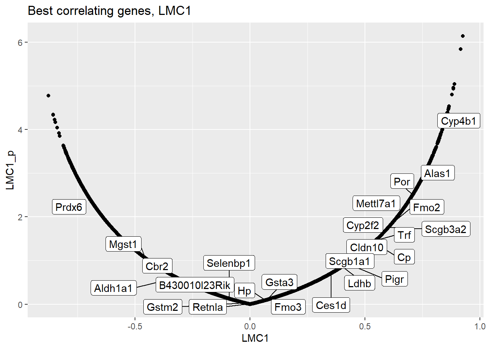
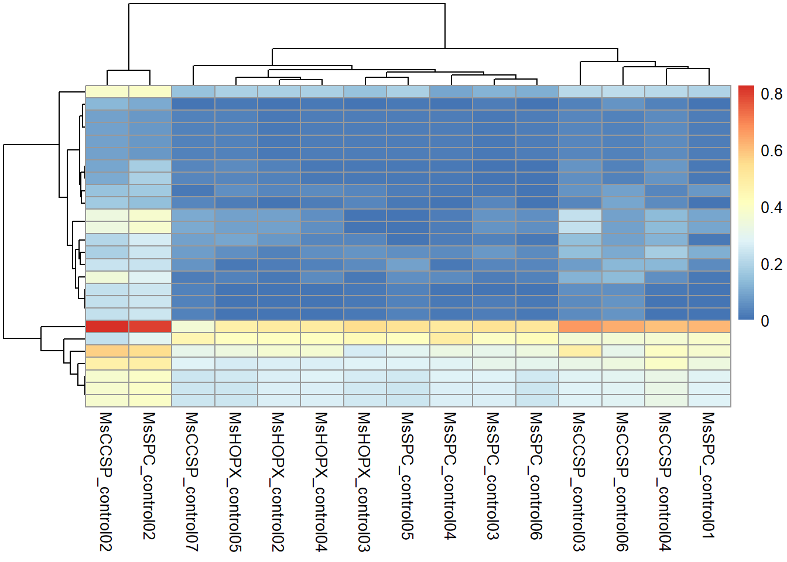
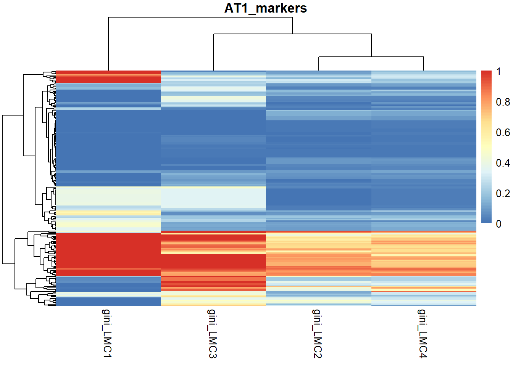
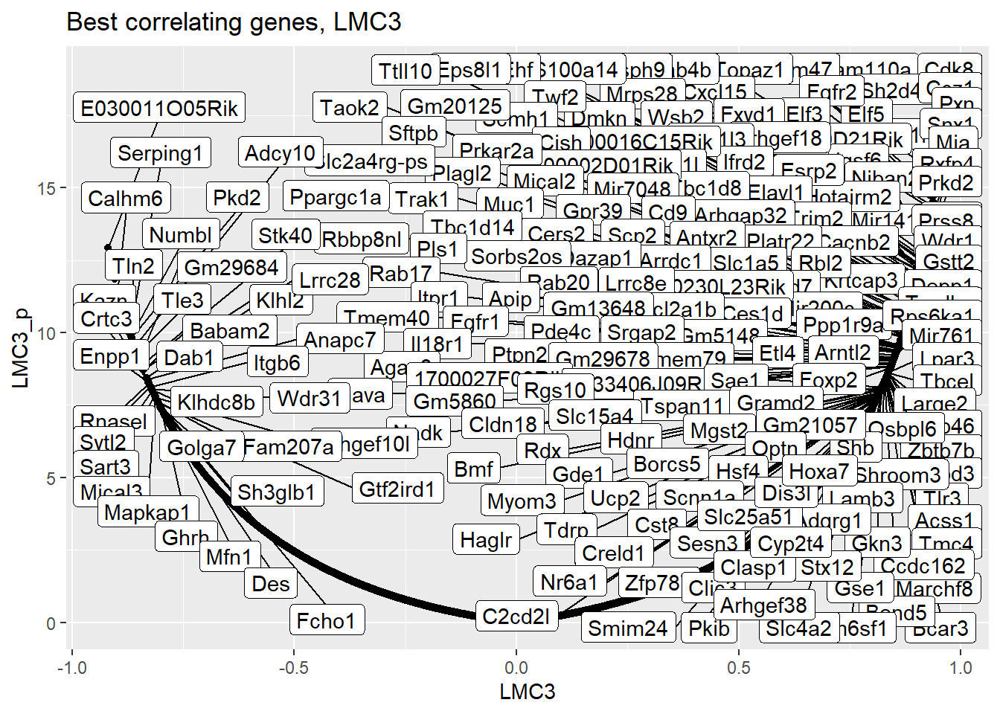
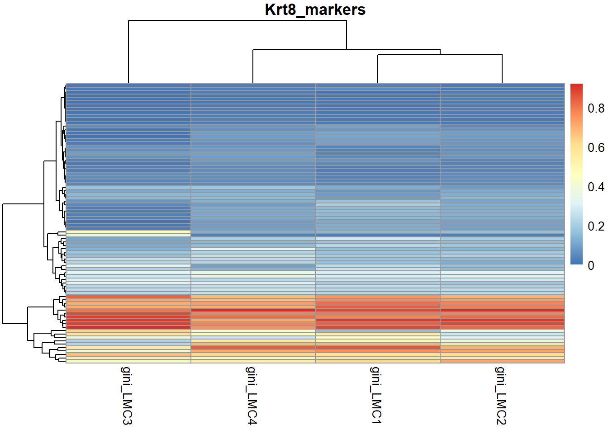
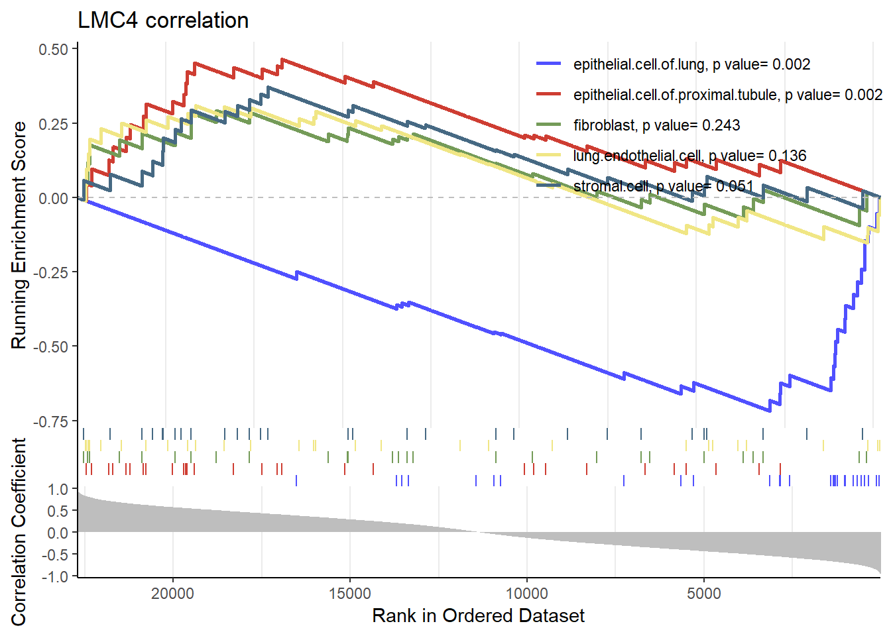

MeDeCom results
Reka Toth
19 March, 2021
Last updated: 2021-03-19
Checks: 6 1
Knit directory: CoO_Lung_Cancer/
This reproducible R Markdown analysis was created with workflowr (version 1.6.2.9000). The Checks tab describes the reproducibility checks that were applied when the results were created. The Past versions tab lists the development history.
Great! Since the R Markdown file has been committed to the Git repository, you know the exact version of the code that produced these results.
Great job! The global environment was empty. Objects defined in the global environment can affect the analysis in your R Markdown file in unknown ways. For reproduciblity it’s best to always run the code in an empty environment.
The command set.seed(20191010) was run prior to running the code in the R Markdown file. Setting a seed ensures that any results that rely on randomness, e.g. subsampling or permutations, are reproducible.
Great job! Recording the operating system, R version, and package versions is critical for reproducibility.
Nice! There were no cached chunks for this analysis, so you can be confident that you successfully produced the results during this run.
Using absolute paths to the files within your workflowr project makes it difficult for you and others to run your code on a different machine. Change the absolute path(s) below to the suggested relative path(s) to make your code more reproducible.
| absolute | relative |
|---|---|
| V:/Reka/33_CoO_lung/CoO_Lung_Cancer/data/selected_markers_MCA.txt | data/selected_markers_MCA.txt |
| V:/Reka/33_CoO_lung/CoO_Lung_Cancer/data/lung_cell_atlas_other_markers.txt | data/lung_cell_atlas_other_markers.txt |
Great! You are using Git for version control. Tracking code development and connecting the code version to the results is critical for reproducibility.
The results in this page were generated with repository version 57f1e45. See the Past versions tab to see a history of the changes made to the R Markdown and HTML files.
Note that you need to be careful to ensure that all relevant files for the analysis have been committed to Git prior to generating the results (you can use wflow_publish or wflow_git_commit). workflowr only checks the R Markdown file, but you know if there are other scripts or data files that it depends on. Below is the status of the Git repository when the results were generated:
Ignored files:
Ignored: .Rhistory
Ignored: .Rproj.user/
Ignored: analysis/.Rhistory
Ignored: data/DML_results_MsCCSP_MsSPC_comparison.RDS
Ignored: data/DML_results_MsCCSP_MsSPC_control_comparison.RDS
Ignored: data/DML_results_MsCCSP_tumor_control_comparison.RDS
Ignored: data/DML_results_MsCCSP_tumor_rfp_control_comparison.RDS
Ignored: data/DML_results_MsCCSP_tumor_rfp_tumor_comparison.RDS
Ignored: data/DML_results_MsSPC_tumor_control_comparison.RDS
Ignored: data/DML_results_MsSPC_tumor_rfp_control_comparison.RDS
Ignored: data/DML_results_MsSPC_tumor_rfp_tumor_comparison.RDS
Ignored: data/DMLs_noMsCCSP_control01_smoothed.RDS
Ignored: data/DMRs_noMsCCSP_control01_smoothed.RDS
Ignored: data/QC_data.RData
Ignored: data/annotation_table_TAGWGBS_02_10.txt
Ignored: data/genotypes_all.txt
Ignored: data/methrix_object.RDS
Ignored: data/no_snps_methrix.RDS
Ignored: data/promoter_beds/
Ignored: data/snp_data_5_strains_14_10.RDS
Ignored: data/snp_ranges.bed
Ignored: data/snp_ranges.bedGraph
Ignored: docs/01_read_in_MethylDackel.html
Ignored: docs/02-DMR_calling.html
Ignored: docs/DMR_report.html
Ignored: docs/PCA_plots.html
Ignored: docs/QC_report.html
Ignored: docs/about.html
Ignored: docs/index.html
Ignored: docs/license.html
Ignored: docs/methrix_reports.html
Ignored: docs/site_libs/jqueryui-1.11.4/index.html
Ignored: enrichment_new_groups/
Untracked files:
Untracked: analysis/02-DMR_calling.Rmd
Untracked: analysis/02-DMR_calling_new_groups.Rmd
Untracked: analysis/DMR_enrichment.Rmd
Untracked: analysis/DMR_report.Rmd
Untracked: analysis/DMR_report_new_groups.Rmd
Untracked: analysis/DMR_report_selected.Rmd
Untracked: analysis/Figures.Rmd
Untracked: analysis/LMC_annotation.Rmd
Untracked: analysis/LMC_based_enhancer_enrichment.R
Untracked: analysis/LMC_promoters.Rmd
Untracked: analysis/MeDeCom.Rmd
Untracked: analysis/MeDeCom_MsCCSP.Rmd
Untracked: analysis/MeDeCom_all.Rmd
Untracked: analysis/MeDeCom_all_no_MsCCSP_c4.Rmd
Untracked: analysis/MeDeCom_controls.Rmd
Untracked: analysis/MeDeCom_controls_no_MsCCSP_c4.Rmd
Untracked: analysis/MeDeCom_poised_enhancers.Rmd
Untracked: analysis/PCA_plots.Rmd
Untracked: analysis/PCA_plots_selected.Rmd
Untracked: analysis/QC_report.Rmd
Untracked: analysis/cNMF.Rmd
Untracked: analysis/candiate_region_plot.Rmd
Untracked: analysis/candiate_region_plot_histogram.Rmd
Untracked: analysis/candiate_region_plot_histogram_new_groups.Rmd
Untracked: analysis/candidate_selection.Rmd
Untracked: analysis/combined_candidate_plots.Rmd
Untracked: analysis/combined_differential.Rmd
Untracked: analysis/combined_enhancer_plots.Rmd
Untracked: analysis/dmr_calling_methrix_17_07_noMsCCSP_control01_smoothed.R
Untracked: analysis/enhancers.rmd
Untracked: analysis/go_region_plot_histogram.Rmd
Untracked: analysis/homer_all.Rmd
Untracked: analysis/homer_enhancers.Rmd
Untracked: analysis/homer_new_groups.Rmd
Untracked: analysis/prepare_homer.Rmd
Untracked: analysis/prepare_homer_alldmr.Rmd
Untracked: analysis/prepare_homer_alldmr_new.Rmd
Untracked: analysis/prepare_medecom_regions.Rmd
Untracked: analysis/prepare_promoters_tca.Rmd
Untracked: analysis/tcga_medecom.Rmd
Untracked: code/EpiScore.R
Untracked: code/Figure_1.R
Untracked: code/Figure_2.R
Untracked: code/Figure_3.R
Untracked: code/LMC_correlation_enrichment.R
Untracked: code/LMC_enrichment.R
Untracked: code/color_palette.R
Untracked: code/gviz_region_plot_figures.R
Untracked: code/medecom_poised_enhancers_all.R
Untracked: code/medecom_poised_enhancers_all_hopx.R
Untracked: code/medecom_poised_enhancers_all_hopx_no1.R
Untracked: code/medecom_poised_enhancers_all_norfp.R
Untracked: code/medecom_poised_enhancers_all_smoothed.R
Untracked: code/presentation_heatmap.R
Untracked: code/shiny_app/
Untracked: code/tcga_medecom_corr.R
Untracked: code/tcga_medecom_correlation.RData
Untracked: code/tcga_shiny.R
Untracked: data/.gitignore
Untracked: data/AU040972cand.pdf
Untracked: data/CD74cand.pdf
Untracked: data/Cyp2f2cand.pdf
Untracked: data/DML_results_MsCCSP_MsSPC_tumor_comparison.RDS
Untracked: data/DML_results_new_group_MsCCSP_MsSPC_control_comparison.RDS
Untracked: data/DML_results_new_group_MsCCSP_MsSPC_tumor_comparison.RDS
Untracked: data/DML_results_new_group_MsCCSP_tumor_control_comparison.RDS
Untracked: data/DML_results_new_group_MsSPC_tumor_control_comparison.RDS
Untracked: data/DMLs_new_groups.RDS
Untracked: data/DMRs_new_groups.RDS
Untracked: data/E-ENAD-15-marker-genes-files_Mouse_cell_atlas.zip
Untracked: data/E-ENAD-15.marker_genes_inferred_cell_type_-_ontology_labels.tsv
Untracked: data/ENCODE_SCREEN_lung_postnatal_0_CRE.7group.bed
Untracked: data/ENdb_target_gene.txt
Untracked: data/FactorViz_outputs.zip
Untracked: data/FactorViz_outputs/
Untracked: data/Frem1cand.pdf
Untracked: data/Fukazawa_2016_Sox2_targets.xlsx
Untracked: data/Itih4cand.pdf
Untracked: data/Itih4cand_data.RDS
Untracked: data/JASPAR_2020_matrix_clustering_vertebrates_archive.zip
Untracked: data/Krt19cand.pdf
Untracked: data/MeDeCom_MCCSP_SPC_prepared_filt.rds
Untracked: data/MsCCPS_MsSPC_enhancers.rds
Untracked: data/MsCCPS_MsSPC_promoters.rds
Untracked: data/MsCCSP_MsSPC_tumor_different_genes.txt
Untracked: data/MsCCSP_tumor_MsCCSP_normal_different_genes.txt
Untracked: data/MsSPC_normal_MsCCSP_normal_different_genes.txt
Untracked: data/MsSPC_tumor_MsCCSP_tumor_different_genes.txt
Untracked: data/MsSPC_tumor_MsSPC_normal_different_genes.txt
Untracked: data/Nkx2-1cand.pdf
Untracked: data/Nr2f2cand.pdf
Untracked: data/Scgb1a1cand.pdf
Untracked: data/Scgb1a1cand_data.RDS
Untracked: data/Scgb3a2cand.pdf
Untracked: data/Scgb3a2cand_data.RDS
Untracked: data/Sftpccand.pdf
Untracked: data/Sftpccand_data.RDS
Untracked: data/Sox2_target.tsv
Untracked: data/Sox2cand.pdf
Untracked: data/Sox2cand_data.RDS
Untracked: data/all_Ts.RDS
Untracked: data/all_metascape report.zip
Untracked: data/all_samples_enhancers.rds
Untracked: data/all_samples_promoters.rds
Untracked: data/annotated_regions/
Untracked: data/annotation_table_TAGWGBS_16_2_2021.txt
Untracked: data/annotation_table_TAGWGBS_17_2.txt
Untracked: data/annotation_table_TAGWGBS_24_2.txt
Untracked: data/annotation_table_TAGWGBS_31_1.txt
Untracked: data/bedgraphs/
Untracked: data/beds/
Untracked: data/beds_new_groups/
Untracked: data/bivalent_enhancers_plot.pdf
Untracked: data/candidate_genes.txt
Untracked: data/candidate_promoter_methylation.RDS
Untracked: data/candidate_promoter_methylation_smoothed.RDS
Untracked: data/candidate_promoter_methylation_smoothed_methrix.RDS
Untracked: data/candidate_promoter_smoothed_bsseq.RDS
Untracked: data/cell_type_markers.gmt
Untracked: data/cellphonedb_example_data.zip
Untracked: data/comparisons.RDS
Untracked: data/dmrs/
Untracked: data/enc_epd_enhc_gene_mm10.txt
Untracked: data/enc_epd_enhc_gene_mm10.txt.gz
Untracked: data/enc_epd_enhc_gene_mm10_int.txt
Untracked: data/enhancer_beds/
Untracked: data/enhancers/
Untracked: data/enhancers_CCSP_genes.txt
Untracked: data/enhancers_LMC1_genes.txt
Untracked: data/enhancers_LMC2_genes.txt
Untracked: data/enhancers_LMC3_genes.txt
Untracked: data/enhancers_LMC4_genes.txt
Untracked: data/enhancers_genes.RDS
Untracked: data/enhancers_genes.txt
Untracked: data/enhancers_genes.xlsx
Untracked: data/enhancers_genes_nobg.txt
Untracked: data/enhancers_genes_nobg.xlsx
Untracked: data/figures/
Untracked: data/ge_dmr_candidates.rds
Untracked: data/homer_res/
Untracked: data/homer_res_new_groups/
Untracked: data/human_lung_cell_atlas_all_markers.txt
Untracked: data/interactive_trees/
Untracked: data/labels.RDS
Untracked: data/linked_promoter_TSS.xlsx
Untracked: data/lung_cell_atlas_other_markers.txt
Untracked: data/medecom/
Untracked: data/medecom_MsCCSP.RDS
Untracked: data/medecom_MsCCSP_MsSPC_enhancers.RDS
Untracked: data/medecom_MsCCSP_MsSPC_promoters.RDS
Untracked: data/medecom_MsCCSP_SPC_promoters.RDS
Untracked: data/medecom_MsCCSP_promoters.RDS
Untracked: data/medecom_all.RDS
Untracked: data/medecom_all_no_MsCCSP_c4.RDS
Untracked: data/medecom_controls.RDS
Untracked: data/medecom_proportions_all.RDS
Untracked: data/medecom_proportions_all_HOPX.RDS
Untracked: data/medecom_random_sites.RDS
Untracked: data/medecom_random_sites_all.RDS
Untracked: data/metascape_result.tju3krgk_.xlsx
Untracked: data/mm9ToMm10.over.chain
Untracked: data/mm9ToMm10.over.chain.gz
Untracked: data/most_variable_in_controls.rds
Untracked: data/new_tumor_groups.RDS
Untracked: data/new_tumor_groups_HOPX.RDS
Untracked: data/nkx2_1_enrichment/
Untracked: data/no_snpsXY_methrix.RDS
Untracked: data/no_snps_methrix.qs
Untracked: data/promoter_bsseq_smoothed.RDS
Untracked: data/promoter_methylation.RDS
Untracked: data/promoter_methylation_smoothed.RDS
Untracked: data/promoter_methylation_smoothed_methrix.RDS
Untracked: data/random_sites.rds
Untracked: data/random_sites_all.rds
Untracked: data/removed_sites_MeDeCom.RDS
Untracked: data/removed_sites_MsCCSP_MeDeCom.RDS
Untracked: data/removed_sites_all_MeDeCom.RDS
Untracked: data/removed_sites_control_MeDeCom.RDS
Untracked: data/selected_markers_MCA.txt
Untracked: data/selected_sites_MeDeCom.RDS
Untracked: data/selected_sites_MsCCSP_MeDeCom.RDS
Untracked: data/selected_sites_all_MeDeCom.RDS
Untracked: data/selected_sites_control_MeDeCom.RDS
Untracked: data/sequencing_annotation_table.csv
Untracked: data/target_genes_nkx2-1.txt
Untracked: data/target_genes_nkx2-1.xlsx
Untracked: data/tcga_laml_ge.RDS
Untracked: data/tcga_luad_ge.RDS
Untracked: data/tcga_medecom_corr_LMC1.tiff
Untracked: data/tcga_medecom_corr_LMC2.tiff
Untracked: data/tcga_medecom_corr_LMC3.tiff
Untracked: data/tcga_medecom_corr_LMC4.tiff
Untracked: data/tcga_medecom_corr_LMC5.tiff
Untracked: data/tcga_medecom_corr_LMC6.tiff
Untracked: data/tcga_medecom_corr_LMC7.tiff
Untracked: data/tcga_medecom_correlation.RData
Untracked: data/~$Fukazawa_2016_Sox2_targets.xlsx
Untracked: data/~$linked_promoter_TSS.xlsx
Untracked: desktop.ini
Untracked: docs/.gitignore
Untracked: docs/DMR_enrichment.html
Untracked: docs/DMR_report_selected.html
Untracked: docs/Figure_1/
Untracked: docs/Figure_2/
Untracked: docs/Figure_3/
Untracked: docs/Figures.html
Untracked: docs/PCA_plots_selected.html
Untracked: docs/QC_report/
Untracked: docs/QC_report_no_SNPs/
Untracked: docs/candiate_region_plot.html
Untracked: docs/candiate_region_plot_histogram.html
Untracked: docs/figure/DMR_enrichment.Rmd/
Untracked: docs/figure/DMR_report.Rmd/
Untracked: docs/figure/DMR_report_new_groups.Rmd/
Untracked: docs/figure/DMR_report_selected.Rmd/
Untracked: docs/figure/Figures.Rmd/
Untracked: docs/figure/MeDeCom_all.Rmd/
Untracked: docs/figure/MeDeCom_all_no_MsCCSP_c4.Rmd/
Untracked: docs/figure/MeDeCom_controls.Rmd/
Untracked: docs/figure/PCA_plots.Rmd/
Untracked: docs/figure/PCA_plots_selected.Rmd/
Untracked: docs/figure/prepare_medecom_regions.Rmd/
Untracked: docs/medecom_CCSP_controls_plot.RDS
Untracked: docs/plots_for_figures/
Untracked: docs/prepare_homer.html
Untracked: docs/prepare_medecom_regions.html
Untracked: docs/site_libs/crosstalk-1.1.0.1/
Untracked: output/DML_results_new_groups.RDS
Untracked: output/QC_report.html
Untracked: output/QC_report/MC_per_chr.tsv
Untracked: output/QC_report/MsCCSP_control01_density.tsv.gz
Untracked: output/QC_report/MsCCSP_control02_density.tsv.gz
Untracked: output/QC_report/MsCCSP_control03_density.tsv.gz
Untracked: output/QC_report/MsCCSP_control04_density.tsv.gz
Untracked: output/QC_report/MsCCSP_control05_density.tsv.gz
Untracked: output/QC_report/MsCCSP_control06_density.tsv.gz
Untracked: output/QC_report/MsCCSP_control07_density.tsv.gz
Untracked: output/QC_report/MsCCSP_tumor01_density.tsv.gz
Untracked: output/QC_report/MsCCSP_tumor02.rfp_density.tsv.gz
Untracked: output/QC_report/MsCCSP_tumor02_density.tsv.gz
Untracked: output/QC_report/MsCCSP_tumor03.rfp_density.tsv.gz
Untracked: output/QC_report/MsCCSP_tumor03_density.tsv.gz
Untracked: output/QC_report/MsCCSP_tumor04.rfp_density.tsv.gz
Untracked: output/QC_report/MsCCSP_tumor04_density.tsv.gz
Untracked: output/QC_report/MsHOPX_control01_density.tsv.gz
Untracked: output/QC_report/MsHOPX_control02_density.tsv.gz
Untracked: output/QC_report/MsHOPX_control03_density.tsv.gz
Untracked: output/QC_report/MsHOPX_control04_density.tsv.gz
Untracked: output/QC_report/MsHOPX_control05_density.tsv.gz
Untracked: output/QC_report/MsHOPX_tumor01.rfp_density.tsv.gz
Untracked: output/QC_report/MsHOPX_tumor01_density.tsv.gz
Untracked: output/QC_report/MsHOPX_tumor02_density.tsv.gz
Untracked: output/QC_report/MsKrt5_tumor01.rfp_density.tsv.gz
Untracked: output/QC_report/MsSPC_control01_density.tsv.gz
Untracked: output/QC_report/MsSPC_control02_density.tsv.gz
Untracked: output/QC_report/MsSPC_control03_density.tsv.gz
Untracked: output/QC_report/MsSPC_control04_density.tsv.gz
Untracked: output/QC_report/MsSPC_control05_density.tsv.gz
Untracked: output/QC_report/MsSPC_control06_density.tsv.gz
Untracked: output/QC_report/MsSPC_tumor01.rfp_density.tsv.gz
Untracked: output/QC_report/MsSPC_tumor01_density.tsv.gz
Untracked: output/QC_report/MsSPC_tumor02.rfp_density.tsv.gz
Untracked: output/QC_report/MsSPC_tumor02_density.tsv.gz
Untracked: output/QC_report/MsSPC_tumor03.rfp_density.tsv.gz
Untracked: output/QC_report/MsSPC_tumor03_density.tsv.gz
Untracked: output/QC_report/MsSPC_tumor04_density.tsv.gz
Untracked: output/QC_report/contig_lens.tsv
Untracked: output/QC_report/global_MC_per_samp.tsv
Untracked: output/QC_report/n_covered_by_all_samples.tsv
Untracked: output/QC_report/n_covered_per_chr.tsv
Untracked: output/QC_report_deprecated/
Untracked: output/QC_report_no_SNPs/MC_per_chr.tsv
Untracked: output/QC_report_no_SNPs/MsCCSP_control01_density.tsv.gz
Untracked: output/QC_report_no_SNPs/MsCCSP_control02_density.tsv.gz
Untracked: output/QC_report_no_SNPs/MsCCSP_control03_density.tsv.gz
Untracked: output/QC_report_no_SNPs/MsCCSP_control04_density.tsv.gz
Untracked: output/QC_report_no_SNPs/MsCCSP_control05_density.tsv.gz
Untracked: output/QC_report_no_SNPs/MsCCSP_control06_density.tsv.gz
Untracked: output/QC_report_no_SNPs/MsCCSP_control07_density.tsv.gz
Untracked: output/QC_report_no_SNPs/MsCCSP_tumor01_density.tsv.gz
Untracked: output/QC_report_no_SNPs/MsCCSP_tumor02.rfp_density.tsv.gz
Untracked: output/QC_report_no_SNPs/MsCCSP_tumor02_density.tsv.gz
Untracked: output/QC_report_no_SNPs/MsCCSP_tumor03.rfp_density.tsv.gz
Untracked: output/QC_report_no_SNPs/MsCCSP_tumor03_density.tsv.gz
Untracked: output/QC_report_no_SNPs/MsCCSP_tumor04.rfp_density.tsv.gz
Untracked: output/QC_report_no_SNPs/MsCCSP_tumor04_density.tsv.gz
Untracked: output/QC_report_no_SNPs/MsHOPX_control01_density.tsv.gz
Untracked: output/QC_report_no_SNPs/MsHOPX_control02_density.tsv.gz
Untracked: output/QC_report_no_SNPs/MsHOPX_control03_density.tsv.gz
Untracked: output/QC_report_no_SNPs/MsHOPX_control04_density.tsv.gz
Untracked: output/QC_report_no_SNPs/MsHOPX_control05_density.tsv.gz
Untracked: output/QC_report_no_SNPs/MsHOPX_tumor01.rfp_density.tsv.gz
Untracked: output/QC_report_no_SNPs/MsHOPX_tumor01_density.tsv.gz
Untracked: output/QC_report_no_SNPs/MsHOPX_tumor02_density.tsv.gz
Untracked: output/QC_report_no_SNPs/MsKrt5_tumor01.rfp_density.tsv.gz
Untracked: output/QC_report_no_SNPs/MsSPC_control01_density.tsv.gz
Untracked: output/QC_report_no_SNPs/MsSPC_control02_density.tsv.gz
Untracked: output/QC_report_no_SNPs/MsSPC_control03_density.tsv.gz
Untracked: output/QC_report_no_SNPs/MsSPC_control04_density.tsv.gz
Untracked: output/QC_report_no_SNPs/MsSPC_control05_density.tsv.gz
Untracked: output/QC_report_no_SNPs/MsSPC_control06_density.tsv.gz
Untracked: output/QC_report_no_SNPs/MsSPC_tumor01.rfp_density.tsv.gz
Untracked: output/QC_report_no_SNPs/MsSPC_tumor01_density.tsv.gz
Untracked: output/QC_report_no_SNPs/MsSPC_tumor02.rfp_density.tsv.gz
Untracked: output/QC_report_no_SNPs/MsSPC_tumor02_density.tsv.gz
Untracked: output/QC_report_no_SNPs/MsSPC_tumor03.rfp_density.tsv.gz
Untracked: output/QC_report_no_SNPs/MsSPC_tumor03_density.tsv.gz
Untracked: output/QC_report_no_SNPs/MsSPC_tumor04_density.tsv.gz
Untracked: output/QC_report_no_SNPs/contig_lens.tsv
Untracked: output/QC_report_no_SNPs/global_MC_per_samp.tsv
Untracked: output/QC_report_no_SNPs/n_covered_by_all_samples.tsv
Untracked: output/QC_report_no_SNPs/n_covered_per_chr.tsv
Untracked: output/QC_report_no_SNPs_deprecated/
Untracked: output/annotated_regions/
Untracked: output/candidate_regions_hist/
Untracked: output/candidate_regions_point/
Untracked: output/enrichment_res/
Untracked: output/homer/
Untracked: output/poised_enhancers_all_heatmap.pdf
Untracked: output/poised_enhancers_controls_heatmap.pdf
Untracked: output/poised_enhancers_heatmap.pdf
Untracked: output/tca_res.RDS
Untracked: output/tca_res_candidate_promoters.RDS
Untracked: output/tca_res_promoter_candidate.RDS
Unstaged changes:
Modified: analysis/_site.yml
Modified: analysis/index.Rmd
Modified: code/MeDeCom_poised_enhancers.R
Modified: code/gviz_region_plot.R
Modified: code/homer_analysis.sh
Modified: output/QC_report/methrix_reports.html
Modified: output/QC_report_no_SNPs/methrix_reports.html
Note that any generated files, e.g. HTML, png, CSS, etc., are not included in this status report because it is ok for generated content to have uncommitted changes.
These are the previous versions of the repository in which changes were made to the R Markdown (analysis/MeDeCom_results_noHopx.Rmd) and HTML (public/MeDeCom_results_noHopx.html) files. If you’ve configured a remote Git repository (see ?wflow_git_remote), click on the hyperlinks in the table below to view the files as they were in that past version.
| File | Version | Author | Date | Message |
|---|---|---|---|---|
| Rmd | 57f1e45 | tkike | 2021-03-19 | wflow_publish(c(“analysis/MeDeCom_results_noHopx.Rmd”)) |
| html | 4d58f62 | tkike | 2021-03-16 | Build site. |
| Rmd | 229655a | tkike | 2021-03-16 | wflow_publish(“analysis/MeDeCom_results_noHopx.Rmd”) |
res <- readRDS(paste0(DATA, "no_snps_methrix.RDS"))
##remove MsCCSP_control01, because of bad QC values
res <- methrix::subset_methrix(res, samples = attr(res@colData, "rownames")[-which(attr(res@colData, "listData")$full_name=="MsCCSP_control01")])Subsetting by samplesres <- methrix::subset_methrix(res, samples = attr(res@colData, "rownames")[-which(attr(res@colData, "listData")$full_name=="MsCCSP_control05")])Subsetting by samplesres <- methrix::subset_methrix(res, samples = attr(res@colData, "rownames")[-which(attr(res@colData, "listData")$full_name=="MsKrt5_tumor01-rfp")])Subsetting by samples#annotation <- read.delim(file=file.path(DATA, "annotation_table_TAGWGBS_02_10.txt"),stringsAsFactors = F)
res <- methrix::subset_methrix(res, contigs = c(paste0("chr", 1:19)))-Subsetting by contigsres <- methrix::subset_methrix(res, samples = attr(res@colData, "rownames")[-which(attr(res@colData, "listData")$full_name=="MsHOPX_control01")])Subsetting by samplesmat <- as.data.frame(readRDS(paste0(DATA, "medecom/bivalent_enhancers.RDS")))
rowsds <- rowSds(as.matrix(mat[,-(1:3)]), na.rm=T)
mat <- mat[order(rowsds, decreasing = T)[1:100000],]
mat <- mat[complete.cases(mat),]
#try without Hopx1
mat <- mat[,colnames(mat)!="MsHOPX_control01"]MeDeCom analysis using bivalent enhancers in all samples - no Hopx-control1
# MeDeCom analysis using bivalent enhancers in controls
#medecom.result2 <- MeDeCom::runMeDeCom(as.matrix(mat[,-(1:3)]), 2:6, c(0, 10^(-5:-1)), NINIT = 10, NFOLDS = 10, ITERMAX = 300, NCORES = 8)
#saveRDS(medecom.result2, file = paste0(DATA, "medecom/poised_enhancers.RDS"))
medecom.result2 <- readRDS( file = paste0(DATA, "medecom/poised_enhancers_new_samples_no_hopx1.RDS"))
MeDeCom::plotParameters(MeDeComSet = medecom.result2)
Model optimization
K_sel <- 4
lambda_sel <- 0.001
proportions <- MeDeCom::getProportions(medecom.result2, K=K_sel, lambda=lambda_sel)
colnames(proportions) <- colnames(mat[,-(1:3)])
LMCs <- MeDeCom::getLMCs(medecom.result2, K=K_sel, lambda=lambda_sel)
colnames(LMCs) <- paste0("LMC", 1:K_sel)
#LMCs <- cbind(mat[,1:3], LMCs)Annotation and plotting
annotation <- data.frame(staining=gsub("(Ms[[:alnum:]]+)_(tumor|control)[[:digit:]]+(.rfp)?", "\\1", colnames(mat[,-(1:3)])),
type= gsub("(Ms[[:alnum:]]+)_(tumor|control)[[:digit:]]+(.rfp)?", "\\2", colnames(mat[,-(1:3)])),
origin = ifelse(grepl("rfp", colnames(mat[,-(1:3)])), "RFP", "GFP"))
rownames(annotation) <- colnames(mat[,-(1:3)])
print(xtable::xtable(annotation), type="html")| staining | type | origin | |
|---|---|---|---|
| MsCCSP_control02 | MsCCSP | control | GFP |
| MsCCSP_control03 | MsCCSP | control | GFP |
| MsCCSP_control04 | MsCCSP | control | GFP |
| MsCCSP_control06 | MsCCSP | control | GFP |
| MsCCSP_control07 | MsCCSP | control | GFP |
| MsCCSP_tumor01 | MsCCSP | tumor | GFP |
| MsCCSP_tumor02.rfp | MsCCSP | tumor | RFP |
| MsCCSP_tumor02 | MsCCSP | tumor | GFP |
| MsCCSP_tumor03.rfp | MsCCSP | tumor | RFP |
| MsCCSP_tumor03 | MsCCSP | tumor | GFP |
| MsCCSP_tumor04.rfp | MsCCSP | tumor | RFP |
| MsCCSP_tumor04 | MsCCSP | tumor | GFP |
| MsHOPX_control02 | MsHOPX | control | GFP |
| MsHOPX_control03 | MsHOPX | control | GFP |
| MsHOPX_control04 | MsHOPX | control | GFP |
| MsHOPX_control05 | MsHOPX | control | GFP |
| MsHOPX_tumor01.rfp | MsHOPX | tumor | RFP |
| MsHOPX_tumor01 | MsHOPX | tumor | GFP |
| MsHOPX_tumor02 | MsHOPX | tumor | GFP |
| MsSPC_control01 | MsSPC | control | GFP |
| MsSPC_control02 | MsSPC | control | GFP |
| MsSPC_control03 | MsSPC | control | GFP |
| MsSPC_control04 | MsSPC | control | GFP |
| MsSPC_control05 | MsSPC | control | GFP |
| MsSPC_control06 | MsSPC | control | GFP |
| MsSPC_tumor01.rfp | MsSPC | tumor | RFP |
| MsSPC_tumor01 | MsSPC | tumor | GFP |
| MsSPC_tumor02.rfp | MsSPC | tumor | RFP |
| MsSPC_tumor02 | MsSPC | tumor | GFP |
| MsSPC_tumor03.rfp | MsSPC | tumor | RFP |
| MsSPC_tumor03 | MsSPC | tumor | GFP |
| MsSPC_tumor04 | MsSPC | tumor | GFP |
try(pheatmap(proportions, show_colnames = T, legend = F, annotation_legend = T, fontsize = 12, annotation_col = annotation))Calculating correlation
promoters <- build_annotations("mm10", "mm10_genes_promoters")Loading required package: GenomicFeatures'select()' returned 1:1 mapping between keys and columnsBuilding promoters...promoter_methylation <- methrix::get_region_summary(res, promoters)-Checking for overlaps..-Summarizing by average-Done! Finished in:35.1s elapsed (34.8s cpu)promoter_methylation$symbol <- promoters$symbol[promoter_methylation$rid]
promoter_methylation <- as.data.frame(promoter_methylation)
promoter_methylation <- promoter_methylation %>%
filter(n_overlap_CpGs>1) %>%
filter(apply(., 1, function(x) sum(is.na(x)))<10)
promoter_methylation_control <- promoter_methylation %>%
select(-grep("tumor", colnames(.)))
promoter_methylation <- promoter_methylation[complete.cases(promoter_methylation[,grep("Ms", colnames(promoter_methylation))]),]
promoter_methylation_control <- promoter_methylation_control[complete.cases(promoter_methylation_control[,grep("Ms", colnames(promoter_methylation_control))]),]
proportions_control <- proportions[,-grep("tumor", colnames(proportions))]
datasets_combined <- list("all"=list(promoter_methylation, proportions),
"control"=list(promoter_methylation_control, proportions_control))
datasets <- datasets_combined[[2]]T_all <- MeDeCom:::getT.gini(D=as.matrix(datasets[[1]][,grep("Ms", colnames(datasets[[1]]))]), A = datasets[[2]], lambda = lambda_sel)
colnames(T_all) <- paste0("gini_LMC", 1:K_sel)
datasets[[1]] <- cbind(datasets[[1]], T_all)
datasets[[1]] <- datasets[[1]] %>%
"[<-"(paste0("LMC", 1:4), value = NA_real_) %>%
"[<-"(paste0("LMC", 1:4, "_p"), value = NA_real_)
for (LMCs in paste0("LMC", 1:4)){
est <-lapply(1:nrow(datasets[[1]]), function(x)
cor.test(datasets[[2]][LMCs,], as.numeric(datasets[[1]][x,-c(1:5, which(colnames(datasets[[1]])=="symbol"), grep("LMC", colnames(datasets[[1]])))]), method = "pears"))
datasets[[1]][,LMCs] <- unlist(lapply(est, function(x) x$estimate))
datasets[[1]][,paste0(LMCs, "_p")] <- -log10(unlist(lapply(est, function(x) x$p.value)))
}
#fun_filt <- function(val, pval){
# ifelse(abs(val)>0.8 & -log10(pval)>5, symbol, NA)
#}
datasets[[1]] <- datasets[[1]] %>%
mutate(across(c(Sepal.Length, Sepal.Width), round))
mutate(new_labels=replace(get(label), duplicated(get(label)), NA))
datasets[[1]] <- datasets[[1]] %>%
mutate(LMC1_label=ifelse(abs(LMC1)>0.9 & LMC1_p>5, symbol, NA))
datasets[[1]] <- datasets[[1]] %>%
mutate(LMC2_label=ifelse(abs(LMC2)>0.9 & LMC2_p>5, symbol, NA))
datasets[[1]] <- datasets[[1]] %>%
mutate(LMC3_label=ifelse(abs(LMC3)>0.9 & LMC3_p>5, symbol, NA))
datasets[[1]] <- datasets[[1]] %>%
mutate(LMC4_label=ifelse(abs(LMC4)>0.9 & LMC4_p>5, symbol, NA))
vars <- names(marker_lists_short)
datasets[[1]] <- datasets[[1]] %>%
mutate(across(colnames(.) %in% vars) ~ case_when(symbol %in% marker_lists_short[[.]]))
mutate(AT1_markers=ifelse(symbol %in% marker_lists_short$`AT1 cells`, symbol, NA)) %>%
mutate(AT2_markers=ifelse(symbol %in% marker_lists_short$`AT2 cells`, symbol, NA)) %>%
mutate(basal_markers=ifelse(symbol %in% marker_lists_short$`basal cells`, symbol, NA)) %>%
mutate(ciliated_markers=ifelse(symbol %in% marker_lists_short$`ciliated cells`, symbol, NA)) %>%
mutate(club_markers=ifelse(symbol %in% marker_lists_short$`club cells`, symbol, NA)) %>%
mutate(goblet_markers=ifelse(symbol %in% marker_lists_short$`goblet cells`, symbol, NA)) %>%
mutate(Krt8_markers=ifelse(symbol %in% marker_lists_short$`Krt8 ADI`, symbol, NA)) %>%
mutate(AT1_AT2_markers=ifelse(symbol %in% marker_lists_short$`Mixed AT1_AT2`, symbol, NA))# %>%
mutate(club_progenitor_markers=ifelse(symbol %in% marker_lists_short$`Club progenitor`, symbol, NA))
volcano_plot <- ggplot(datasets[[1]], aes(x=LMC1, y=-log10(LMC1_p), label=club_markers)) +
geom_point()+geom_label_repel(max.overlaps = Inf)
saveRDS(datasets[[1]], file=file.path(DATA, "medecom/control_correlation_LMCs_no_Hopx.Rmd"))Control samples
Correlation of promoter methylation with LMCs
datasets[[1]] <- readRDS( file=file.path(DATA, "medecom/control_correlation_LMCs_no_Hopx.Rmd"))
for (lmcs in paste0("LMC", 1:4)){
g <- volcano_plot_correlation(data = datasets[[1]], x = lmcs, y = paste0(lmcs, "_p"), label = paste0(lmcs, "_label"))
print(g)
}Warning: Removed 1 rows containing missing values (geom_point).Warning: Removed 129374 rows containing missing values (geom_label_repel).Warning: Removed 1 rows containing missing values (geom_point).Warning: Removed 129306 rows containing missing values (geom_label_repel).Warning: Removed 1 rows containing missing values (geom_point).Warning: Removed 129359 rows containing missing values (geom_label_repel).Warning: Removed 1 rows containing missing values (geom_point).Warning: Removed 129298 rows containing missing values (geom_label_repel).
for (marks in colnames(datasets[[1]])[grep("_markers",colnames(datasets[[1]]) )]){
cat('\n')
cat("### Markers for ",
gsub("_markers", "", marks), " cells. ",
"\n")
for (lmcs in paste0("LMC", 1:4)){
g <- volcano_plot_correlation(data = datasets[[1]], x = lmcs, y = paste0(lmcs, "_p"), label = marks)
print(g)
}
cat('\n')
plot_data <- datasets[[1]][!is.na(datasets[[1]][,marks]),]
plot_data <- plot_data[,grep("control", colnames(plot_data))]
try(pheatmap(plot_data, show_rownames = F))
cat('\n')
}Markers for AT1 cells.
Warning: Removed 1 rows containing missing values (geom_point).Warning: Removed 129348 rows containing missing values (geom_label_repel).Warning: Removed 1 rows containing missing values (geom_point).
Warning: Removed 129348 rows containing missing values (geom_label_repel).Warning: Removed 1 rows containing missing values (geom_point).
Warning: Removed 129348 rows containing missing values (geom_label_repel).Warning: Removed 1 rows containing missing values (geom_point).
Warning: Removed 129348 rows containing missing values (geom_label_repel).
Markers for AT2 cells.
Warning: Removed 1 rows containing missing values (geom_point).Warning: Removed 129351 rows containing missing values (geom_label_repel).Warning: Removed 1 rows containing missing values (geom_point).
Warning: Removed 129351 rows containing missing values (geom_label_repel).Warning: Removed 1 rows containing missing values (geom_point).
Warning: Removed 129351 rows containing missing values (geom_label_repel).Warning: Removed 1 rows containing missing values (geom_point).
Warning: Removed 129351 rows containing missing values (geom_label_repel).
Markers for basal cells.
Warning: Removed 1 rows containing missing values (geom_point).Warning: Removed 129346 rows containing missing values (geom_label_repel).Warning: Removed 1 rows containing missing values (geom_point).
Warning: Removed 129346 rows containing missing values (geom_label_repel).Warning: Removed 1 rows containing missing values (geom_point).
Warning: Removed 129346 rows containing missing values (geom_label_repel).Warning: Removed 1 rows containing missing values (geom_point).
Warning: Removed 129346 rows containing missing values (geom_label_repel).
Markers for ciliated cells.
Warning: Removed 1 rows containing missing values (geom_point).Warning: Removed 129352 rows containing missing values (geom_label_repel).Warning: Removed 1 rows containing missing values (geom_point).
Warning: Removed 129352 rows containing missing values (geom_label_repel).
Warning: Removed 1 rows containing missing values (geom_point).
Warning: Removed 129352 rows containing missing values (geom_label_repel).
Warning: Removed 1 rows containing missing values (geom_point).
Warning: Removed 129352 rows containing missing values (geom_label_repel).
Markers for club cells.
Warning: Removed 1 rows containing missing values (geom_point).Warning: Removed 129351 rows containing missing values (geom_label_repel).
Warning: Removed 1 rows containing missing values (geom_point).
Warning: Removed 129351 rows containing missing values (geom_label_repel).Warning: Removed 1 rows containing missing values (geom_point).
Warning: Removed 129351 rows containing missing values (geom_label_repel).Warning: Removed 1 rows containing missing values (geom_point).
Warning: Removed 129351 rows containing missing values (geom_label_repel).
Markers for goblet cells.
Warning: Removed 1 rows containing missing values (geom_point).Warning: Removed 129347 rows containing missing values (geom_label_repel).Warning: Removed 1 rows containing missing values (geom_point).
Warning: Removed 129347 rows containing missing values (geom_label_repel).Warning: Removed 1 rows containing missing values (geom_point).
Warning: Removed 129347 rows containing missing values (geom_label_repel).Warning: Removed 1 rows containing missing values (geom_point).
Warning: Removed 129347 rows containing missing values (geom_label_repel).
Markers for Krt8 cells.
Warning: Removed 1 rows containing missing values (geom_point).
Warning: Removed 129347 rows containing missing values (geom_label_repel).Warning: Removed 1 rows containing missing values (geom_point).
Warning: Removed 129347 rows containing missing values (geom_label_repel).Warning: Removed 1 rows containing missing values (geom_point).
Warning: Removed 129347 rows containing missing values (geom_label_repel).Warning: Removed 1 rows containing missing values (geom_point).
Warning: Removed 129347 rows containing missing values (geom_label_repel).
Markers for AT1_AT2 cells.
Warning: Removed 1 rows containing missing values (geom_point).Warning: Removed 129366 rows containing missing values (geom_label_repel).Warning: Removed 1 rows containing missing values (geom_point).
Warning: Removed 129366 rows containing missing values (geom_label_repel).Warning: Removed 1 rows containing missing values (geom_point).
Warning: Removed 129366 rows containing missing values (geom_label_repel).Warning: Removed 1 rows containing missing values (geom_point).
Warning: Removed 129366 rows containing missing values (geom_label_repel).
cat("### for labels") for labels
plot_data <- datasets[[1]][!is.na(datasets[[1]]$LMC1_label),]
plot_data <- plot_data[,grep("control", colnames(plot_data))]
try(pheatmap(plot_data, show_rownames = F)) plot_data <- datasets[[1]][!is.na(datasets[[1]]$LMC2_label),]
plot_data <- plot_data[,grep("control", colnames(plot_data))]
try(pheatmap(plot_data, show_rownames = F)) plot_data <- datasets[[1]][!is.na(datasets[[1]]$LMC3_label),]
plot_data <- plot_data[,grep("control", colnames(plot_data))]
try(pheatmap(plot_data, show_rownames = F))
plot_data <- datasets[[1]][!is.na(datasets[[1]]$LMC4_label),]
plot_data <- plot_data[,grep("control", colnames(plot_data))]
try(pheatmap(plot_data, show_rownames = F)) cat('\n')LMC methylation of markers
for (marks in colnames(datasets[[1]])[grep("_markers",colnames(datasets[[1]]) )]){
cat('\n')
cat("### Markers for ",
gsub("_markers", "", marks), " cells. ",
"\n")
try(pheatmap(datasets[[1]][!is.na(datasets[[1]][,marks]),grep("gini", colnames(datasets[[1]]))], show_rownames = F, main = marks))
cat('\n')
}
### Markers for AT1 cells. 
### Markers for AT2 cells.
### Markers for basal cells.
### Markers for ciliated cells.
### Markers for club cells.
### Markers for goblet cells.
### Markers for Krt8 cells.
### Markers for AT1_AT2 cells. All samples
datasets <- datasets_combined[[1]]
T_all <- MeDeCom:::getT.gini(D=as.matrix(datasets[[1]][,grep("Ms", colnames(datasets[[1]]))]), A = datasets[[2]], lambda = lambda_sel)
colnames(T_all) <- paste0("gini_LMC", 1:K_sel)
datasets[[1]] <- cbind(datasets[[1]], T_all)
datasets[[1]] <- datasets[[1]] %>%
"[<-"(paste0("LMC", 1:4), value = NA_real_) %>%
"[<-"(paste0("LMC", 1:4, "_p"), value = NA_real_)
for (LMCs in paste0("LMC", 1:4)){
est <-lapply(1:nrow(datasets[[1]]), function(x)
cor.test(datasets[[2]][LMCs,], as.numeric(datasets[[1]][x,-c(1:5, which(colnames(datasets[[1]])=="symbol"), grep("LMC", colnames(datasets[[1]])))]), method = "pears"))
datasets[[1]][,LMCs] <- unlist(lapply(est, function(x) x$estimate))
datasets[[1]][,paste0(LMCs, "_p")] <- -log10(unlist(lapply(est, function(x) x$p.value)))
}
#fun_filt <- function(val, pval){
# ifelse(abs(val)>0.8 & -log10(pval)>5, symbol, NA)
#}
#datasets[[1]] <- datasets[[1]] %>%
# mutate(across(c(Sepal.Length, Sepal.Width), round))
# mutate(new_labels=replace(get(label), duplicated(get(label)), NA))
datasets[[1]] <- datasets[[1]] %>%
mutate(LMC1_label=ifelse(abs(LMC1)>0.8 & LMC1_p>5, symbol, NA))
datasets[[1]] <- datasets[[1]] %>%
mutate(LMC2_label=ifelse(abs(LMC2)>0.8 & LMC2_p>5, symbol, NA))
datasets[[1]] <- datasets[[1]] %>%
mutate(LMC3_label=ifelse(abs(LMC3)>0.8 & LMC3_p>5, symbol, NA))
datasets[[1]] <- datasets[[1]] %>%
mutate(LMC4_label=ifelse(abs(LMC4)>0.8 & LMC4_p>5, symbol, NA))
vars <- names(marker_lists_short)
datasets[[1]] <- datasets[[1]] %>%
# mutate(across(colnames(.) %in% vars) ~ case_when(symbol %in% marker_lists_short[[.]]))
mutate(AT1_markers=ifelse(symbol %in% marker_lists_short$`AT1 cells`, symbol, NA)) %>%
mutate(AT2_markers=ifelse(symbol %in% marker_lists_short$`AT2 cells`, symbol, NA)) %>%
mutate(basal_markers=ifelse(symbol %in% marker_lists_short$`basal cells`, symbol, NA)) %>%
mutate(ciliated_markers=ifelse(symbol %in% marker_lists_short$`ciliated cells`, symbol, NA)) %>%
mutate(club_markers=ifelse(symbol %in% marker_lists_short$`club cells`, symbol, NA)) %>%
mutate(goblet_markers=ifelse(symbol %in% marker_lists_short$`goblet cells`, symbol, NA)) %>%
mutate(Krt8_markers=ifelse(symbol %in% marker_lists_short$`Krt8 ADI`, symbol, NA)) %>%
mutate(AT1_AT2_markers=ifelse(symbol %in% marker_lists_short$`Mixed AT1_AT2`, symbol, NA)) %>%
mutate(club_progenitor_markers=ifelse(symbol %in% marker_lists_short$`Club progenitor`, symbol, NA))
#volcano_plot <- ggplot(datasets[[1]], aes(x=LMC1, y=-log10(LMC1_p), label=club_markers)) +
# geom_point()+geom_label_repel(max.overlaps = Inf)Correlation of promoter methylation with LMCs
for (lmcs in paste0("LMC", 1:4)){
g <- volcano_plot_correlation(data = datasets[[1]], x = lmcs, y = paste0(lmcs, "_p"), label = paste0(lmcs, "_label"))
print(g)
}Warning: Removed 78529 rows containing missing values (geom_label_repel).Warning: Removed 79552 rows containing missing values (geom_label_repel).Warning: Removed 79425 rows containing missing values (geom_label_repel).
Warning: Removed 79531 rows containing missing values (geom_label_repel).for (marks in colnames(datasets[[1]])[grep("_markers",colnames(datasets[[1]]) )]){
cat('\n')
cat("### Markers for ",
gsub("_markers", "", marks), " cells. ",
"\n")
for (lmcs in paste0("LMC", 1:4)){
g <- volcano_plot_correlation(data = datasets[[1]], x = lmcs, y = paste0(lmcs, "_p"), label = marks)
print(g)
}
cat('\n')
plot_data <- datasets[[1]][!is.na(datasets[[1]][,marks]),]
plot_data <- plot_data[,grep("Ms", colnames(plot_data))]
try(pheatmap(plot_data, show_rownames = F))
cat('\n')
}Markers for AT1 cells.
Warning: Removed 79616 rows containing missing values (geom_label_repel).Warning: Removed 79616 rows containing missing values (geom_label_repel).Warning: Removed 79616 rows containing missing values (geom_label_repel).Warning: Removed 79616 rows containing missing values (geom_label_repel).
Markers for AT2 cells.
Warning: Removed 79618 rows containing missing values (geom_label_repel).Warning: Removed 79618 rows containing missing values (geom_label_repel).Warning: Removed 79618 rows containing missing values (geom_label_repel).Warning: Removed 79618 rows containing missing values (geom_label_repel).
Markers for basal cells.
Warning: Removed 79605 rows containing missing values (geom_label_repel).Warning: Removed 79605 rows containing missing values (geom_label_repel).Warning: Removed 79605 rows containing missing values (geom_label_repel).Warning: Removed 79605 rows containing missing values (geom_label_repel).
Markers for ciliated cells.
Warning: Removed 79613 rows containing missing values (geom_label_repel).Warning: Removed 79613 rows containing missing values (geom_label_repel).Warning: Removed 79613 rows containing missing values (geom_label_repel).Warning: Removed 79613 rows containing missing values (geom_label_repel).
Markers for club cells.
Warning: Removed 79610 rows containing missing values (geom_label_repel).Warning: Removed 79610 rows containing missing values (geom_label_repel).Warning: Removed 79610 rows containing missing values (geom_label_repel).Warning: Removed 79610 rows containing missing values (geom_label_repel).
Markers for goblet cells.
Warning: Removed 79610 rows containing missing values (geom_label_repel).Warning: Removed 79610 rows containing missing values (geom_label_repel).Warning: Removed 79610 rows containing missing values (geom_label_repel).Warning: Removed 79610 rows containing missing values (geom_label_repel).
Markers for Krt8 cells.
Warning: Removed 79611 rows containing missing values (geom_label_repel).Warning: Removed 79611 rows containing missing values (geom_label_repel).Warning: Removed 79611 rows containing missing values (geom_label_repel).Warning: Removed 79611 rows containing missing values (geom_label_repel).
Markers for AT1_AT2 cells.
Warning: Removed 79622 rows containing missing values (geom_label_repel).Warning: Removed 79622 rows containing missing values (geom_label_repel).Warning: Removed 79622 rows containing missing values (geom_label_repel).Warning: Removed 79622 rows containing missing values (geom_label_repel).
Markers for club_progenitor cells.
Warning: Removed 79628 rows containing missing values (geom_label_repel).Warning: Removed 79628 rows containing missing values (geom_label_repel).Warning: Removed 79628 rows containing missing values (geom_label_repel).Warning: Removed 79628 rows containing missing values (geom_label_repel).Error in hclust(d, method = method) : must have n >= 2 objects to cluster
cat("### for labels") for labels
plot_data <- datasets[[1]][!is.na(datasets[[1]]$LMC1_label),]
plot_data <- plot_data[,grep("Ms", colnames(plot_data))]
try(pheatmap(plot_data, show_rownames = F)) plot_data <- datasets[[1]][!is.na(datasets[[1]]$LMC2_label),]
plot_data <- plot_data[,grep("Ms", colnames(plot_data))]
try(pheatmap(plot_data, show_rownames = F)) plot_data <- datasets[[1]][!is.na(datasets[[1]]$LMC3_label),]
plot_data <- plot_data[,grep("Ms", colnames(plot_data))]
try(pheatmap(plot_data, show_rownames = F)) plot_data <- datasets[[1]][!is.na(datasets[[1]]$LMC4_label),]
plot_data <- plot_data[,grep("Ms", colnames(plot_data))]
try(pheatmap(plot_data, show_rownames = F)) cat('\n')LMC methylation of markers
for (marks in colnames(datasets[[1]])[grep("_markers",colnames(datasets[[1]]) )]){
cat('\n')
cat("### Markers for ",
gsub("_markers", "", marks), " cells. ",
"\n")
try(pheatmap(datasets[[1]][!is.na(datasets[[1]][,marks]),grep("gini", colnames(datasets[[1]]))], show_rownames = F, main = marks))
cat('\n')
}
### Markers for AT1 cells.
### Markers for AT2 cells.
### Markers for basal cells.
### Markers for ciliated cells.
### Markers for club cells.
### Markers for goblet cells.
### Markers for Krt8 cells. 
### Markers for AT1_AT2 cells.
### Markers for club_progenitor cells.
Error in hclust(d, method = method) : must have n >= 2 objects to clusterGSEA like plots
Epithelial cell types
mypal = pal_igv()(27)
df <- readRDS(file=file.path(DATA, "medecom/control_correlation_LMCs_no_Hopx.Rmd"))
gsea_rank <- df %>%
arrange(desc(abs(LMC1)),desc(LMC1_p)) %>%
mutate(symbol=replace(symbol, duplicated(symbol), NA))%>%
dplyr::filter(!is.na(symbol)) %>%
arrange(LMC1)
lmc1_rank <- gsea_rank$LMC1
names(lmc1_rank) <- gsea_rank$symbol
fgseaRes <- fgsea(pathways = marker_lists_short,
stats = lmc1_rank,
minSize = 3,
maxSize = 500, nperm=1000)Warning in fgsea(pathways = marker_lists_short, stats = lmc1_rank,
minSize = 3, : You are trying to run fgseaSimple. It is recommended to use
fgseaMultilevel. To run fgseaMultilevel, you need to remove the nperm argument
in the fgsea function call.Warning in preparePathwaysAndStats(pathways, stats, minSize, maxSize, gseaParam, : There are ties in the preranked stats (0.18% of the list).
The order of those tied genes will be arbitrary, which may produce unexpected results.gseaplot2(geneSetID = c(4,5,7,8), color = c("green", "red", "blue", "black"), base_size = 11, rel_heights = c(1.5, 0.5, 1), subplots = 1:3, pvalue_table = FALSE, ES_geom = "line",
title = "LMC1 correlation", ranks = lmc1_rank, geneSet = marker_lists_short, pvaluetable = fgseaRes)Scale for 'x' is already present. Adding another scale for 'x', which will
replace the existing scale.gsea_rank <- df %>%
arrange(desc(abs(LMC4)),desc(LMC4_p)) %>%
mutate(symbol=replace(symbol, duplicated(symbol), NA))%>%
dplyr::filter(!is.na(symbol)) %>%
arrange(LMC4)
lmc4_rank <- gsea_rank$LMC4
names(lmc4_rank) <- gsea_rank$symbol
fgseaRes <- fgsea(pathways = marker_lists_short,
stats = lmc4_rank,
minSize = 3,
maxSize = 500, nperm=1000)Warning in fgsea(pathways = marker_lists_short, stats = lmc4_rank,
minSize = 3, : You are trying to run fgseaSimple. It is recommended to use
fgseaMultilevel. To run fgseaMultilevel, you need to remove the nperm argument
in the fgsea function call.Warning in preparePathwaysAndStats(pathways, stats, minSize, maxSize, gseaParam, : There are ties in the preranked stats (0.15% of the list).
The order of those tied genes will be arbitrary, which may produce unexpected results.gseaplot2(geneSetID = c(4,5,7,8), color = c("green", "red", "blue", "black"), base_size = 11, rel_heights = c(1.5, 0.5, 1), subplots = 1:3, pvalue_table = FALSE, ES_geom = "line",
title = "LMC4 correlation", ranks = lmc4_rank, geneSet = marker_lists_short, pvaluetable = fgseaRes)Scale for 'x' is already present. Adding another scale for 'x', which will
replace the existing scale.gsea_rank <- df %>%
arrange(desc(abs(LMC3)),desc(LMC3_p)) %>%
mutate(symbol=replace(symbol, duplicated(symbol), NA))%>%
dplyr::filter(!is.na(symbol)) %>%
arrange(LMC3)
lmc3_rank <- gsea_rank$LMC3
names(lmc3_rank) <- gsea_rank$symbol
fgseaRes <- fgsea(pathways = marker_lists_short,
stats = lmc3_rank,
minSize = 3,
maxSize = 500, nperm=1000)Warning in fgsea(pathways = marker_lists_short, stats = lmc3_rank,
minSize = 3, : You are trying to run fgseaSimple. It is recommended to use
fgseaMultilevel. To run fgseaMultilevel, you need to remove the nperm argument
in the fgsea function call.Warning in preparePathwaysAndStats(pathways, stats, minSize, maxSize, gseaParam, : There are ties in the preranked stats (0.21% of the list).
The order of those tied genes will be arbitrary, which may produce unexpected results.gseaplot2(geneSetID = c(4,5,7,8), color = c("green", "red", "blue", "black"), base_size = 11, rel_heights = c(1.5, 0.2, 0.5), subplots = 1:3, pvalue_table = FALSE, ES_geom = "line",
title = "LMC3 correlation", ranks = lmc3_rank, geneSet = marker_lists_short, pvaluetable = fgseaRes)Scale for 'x' is already present. Adding another scale for 'x', which will
replace the existing scale.gseaplot2(geneSetID = c(1:10), color = mypal[1:10], base_size = 11, rel_heights = c(1.5, 0.2, 0.5), subplots = 1:3, pvalue_table = FALSE, ES_geom = "line",
title = "LMC3 correlation", ranks = lmc3_rank, geneSet = marker_lists_short, pvaluetable = fgseaRes)Scale for 'x' is already present. Adding another scale for 'x', which will
replace the existing scale.gseaplot2(geneSetID = c(11:20), color = mypal[11:20], base_size = 11, rel_heights = c(1.5, 0.2, 0.5), subplots = 1:3, pvalue_table = FALSE, ES_geom = "line",
title = "LMC3 correlation", ranks = lmc3_rank, geneSet = marker_lists_short, pvaluetable = fgseaRes)Scale for 'x' is already present. Adding another scale for 'x', which will
replace the existing scale.gseaplot2(geneSetID = c(21:27), color = mypal[21:27], base_size = 11, rel_heights = c(1.5, 0.2, 0.5), subplots = 1:3, pvalue_table = FALSE, ES_geom = "line",
title = "LMC3 correlation", ranks = lmc3_rank, geneSet = marker_lists_short, pvaluetable = fgseaRes)Scale for 'x' is already present. Adding another scale for 'x', which will
replace the existing scale.selected_markers_MCA <- read.delim("V:/Reka/33_CoO_lung/CoO_Lung_Cancer/data/selected_markers_MCA.txt")
selected_markers_MCA <- apply(selected_markers_MCA, 2, function(x) mapIds(org.Mm.eg.db,
keys = x,
column = "SYMBOL",
keytype = "ENSEMBL"))'select()' returned 1:1 mapping between keys and columns
'select()' returned 1:1 mapping between keys and columns'select()' returned 1:many mapping between keys and columns'select()' returned 1:1 mapping between keys and columns'select()' returned 1:many mapping between keys and columnsselected_markers_MCA_l <- lapply(1:ncol(selected_markers_MCA), function(i) selected_markers_MCA[,i])
names(selected_markers_MCA_l) <- colnames(selected_markers_MCA)
fgseaRes <- fgsea(pathways = selected_markers_MCA_l,
stats = lmc1_rank,
minSize = 3,
maxSize = 500, nperm=1000)Warning in fgsea(pathways = selected_markers_MCA_l, stats = lmc1_rank,
minSize = 3, : You are trying to run fgseaSimple. It is recommended to use
fgseaMultilevel. To run fgseaMultilevel, you need to remove the nperm argument
in the fgsea function call.Warning in preparePathwaysAndStats(pathways, stats, minSize, maxSize, gseaParam, : There are ties in the preranked stats (0.18% of the list).
The order of those tied genes will be arbitrary, which may produce unexpected results.gseaplot2(geneSetID = c(1:5), color = mypal[1:5], base_size = 11, rel_heights = c(1.5, 0.2, 0.5), subplots = 1:3, pvalue_table = FALSE, ES_geom = "line",
title = "LMC1 correlation", ranks = lmc1_rank, geneSet = selected_markers_MCA_l, pvaluetable = fgseaRes)Scale for 'x' is already present. Adding another scale for 'x', which will
replace the existing scale.fgseaRes <- fgsea(pathways = selected_markers_MCA_l,
stats = lmc4_rank,
minSize = 3,
maxSize = 500, nperm=1000)Warning in fgsea(pathways = selected_markers_MCA_l, stats = lmc4_rank,
minSize = 3, : You are trying to run fgseaSimple. It is recommended to use
fgseaMultilevel. To run fgseaMultilevel, you need to remove the nperm argument
in the fgsea function call.Warning in preparePathwaysAndStats(pathways, stats, minSize, maxSize, gseaParam, : There are ties in the preranked stats (0.15% of the list).
The order of those tied genes will be arbitrary, which may produce unexpected results.gseaplot2(geneSetID = c(1:5), color = mypal[1:5], base_size = 11, rel_heights = c(1.5, 0.2, 0.5), subplots = 1:3, pvalue_table = FALSE, ES_geom = "line",
title = "LMC4 correlation", ranks = lmc4_rank, geneSet = selected_markers_MCA_l, pvaluetable = fgseaRes)Scale for 'x' is already present. Adding another scale for 'x', which will
replace the existing scale.
fgseaRes <- fgsea(pathways = selected_markers_MCA_l,
stats = lmc3_rank,
minSize = 3,
maxSize = 500, nperm=1000)Warning in fgsea(pathways = selected_markers_MCA_l, stats = lmc3_rank,
minSize = 3, : You are trying to run fgseaSimple. It is recommended to use
fgseaMultilevel. To run fgseaMultilevel, you need to remove the nperm argument
in the fgsea function call.Warning in preparePathwaysAndStats(pathways, stats, minSize, maxSize, gseaParam, : There are ties in the preranked stats (0.21% of the list).
The order of those tied genes will be arbitrary, which may produce unexpected results.gseaplot2(geneSetID = c(1:5), color = mypal[1:5], base_size = 11, rel_heights = c(1.5, 0.2, 0.5), subplots = 1:3, pvalue_table = FALSE, ES_geom = "line",
title = "LMC3 correlation", ranks = lmc3_rank, geneSet = selected_markers_MCA_l, pvaluetable = fgseaRes)Scale for 'x' is already present. Adding another scale for 'x', which will
replace the existing scale.lung_cell_atlas_other_markers <- read.delim("V:/Reka/33_CoO_lung/CoO_Lung_Cancer/data/lung_cell_atlas_other_markers.txt")
new_list <- lapply(1:ncol(lung_cell_atlas_other_markers), function(x) CapStr(tolower(lung_cell_atlas_other_markers[,x])))
new_list <- lapply(new_list, function(x) x[1:28])
new_list <- lapply(new_list, function(x) x[x %in% gsea_rank$symbol])
names(new_list) <- colnames(lung_cell_atlas_other_markers)
fgseaRes <- fgsea(pathways = new_list,
stats = lmc3_rank,
minSize = 3,
maxSize = 500, nperm=1000)Warning in fgsea(pathways = new_list, stats = lmc3_rank, minSize = 3,
maxSize = 500, : You are trying to run fgseaSimple. It is recommended to use
fgseaMultilevel. To run fgseaMultilevel, you need to remove the nperm argument
in the fgsea function call.Warning in preparePathwaysAndStats(pathways, stats, minSize, maxSize, gseaParam, : There are ties in the preranked stats (0.21% of the list).
The order of those tied genes will be arbitrary, which may produce unexpected results.gseaplot2(geneSetID = c(1:13), color = mypal[1:13], base_size = 11, rel_heights = c(1.5, 0.2, 0.5), subplots = 1:3, pvalue_table = FALSE, ES_geom = "line",
title = "LMC3 correlation", ranks = lmc3_rank, geneSet = new_list, pvaluetable = fgseaRes)Scale for 'x' is already present. Adding another scale for 'x', which will
replace the existing scale.gseaplot2(geneSetID = c(3:5), color = mypal[1:3], base_size = 11, rel_heights = c(1.5, 0.2, 0.5), subplots = 1:3, pvalue_table = FALSE, ES_geom = "line",
title = "LMC3 correlation", ranks = lmc3_rank, geneSet = new_list, pvaluetable = fgseaRes)Scale for 'x' is already present. Adding another scale for 'x', which will
replace the existing scale.#Heatmap all pathways combined
marker_lists_short <- marker_lists_short[-19]
all_pw <- c(marker_lists_short, selected_markers_MCA_l, new_list)
for (lmcs in list(lmc1_rank, lmc3_rank, lmc4_rank)){
gsdata2 <- do.call(rbind, lapply(1:length(all_pw), function(id) gsInfo2(geneSetID=id, geneset = all_pw, res = lmcs)))
fgseaRes <- fgsea(pathways = all_pw,
stats = lmcs,
minSize = 3,
maxSize = 500, nperm=1000)
gsdata3 <- gsdata2 %>%
inner_join(fgseaRes[,c("pathway", "pval")], by= c("Description"="pathway")) %>%
mutate(significant=ifelse(pval<0.05, " *", NA)) %>%
mutate(Description=factor(Description, levels = fgseaRes$pathway[order(fgseaRes$ES, decreasing = T)]))
p <- ggplot(gsdata3)+geom_tile(aes(Description, factor(x), fill=runningScore)) +scale_fill_gradient2(low="darkred", mid="white", high="darkblue")+theme(axis.text.x = element_blank(), axis.title.x = element_blank(), axis.ticks.x = element_blank(), axis.text.y=element_text())+ coord_flip()
print(p)
}Warning in fgsea(pathways = all_pw, stats = lmcs, minSize = 3, maxSize = 500, :
You are trying to run fgseaSimple. It is recommended to use fgseaMultilevel. To
run fgseaMultilevel, you need to remove the nperm argument in the fgsea function
call.Warning in preparePathwaysAndStats(pathways, stats, minSize, maxSize, gseaParam, : There are ties in the preranked stats (0.18% of the list).
The order of those tied genes will be arbitrary, which may produce unexpected results.Warning in fgsea(pathways = all_pw, stats = lmcs, minSize = 3, maxSize = 500, :
You are trying to run fgseaSimple. It is recommended to use fgseaMultilevel. To
run fgseaMultilevel, you need to remove the nperm argument in the fgsea function
call.Warning in preparePathwaysAndStats(pathways, stats, minSize, maxSize, gseaParam, : There are ties in the preranked stats (0.21% of the list).
The order of those tied genes will be arbitrary, which may produce unexpected results.Warning in fgsea(pathways = all_pw, stats = lmcs, minSize = 3, maxSize = 500, :
You are trying to run fgseaSimple. It is recommended to use fgseaMultilevel. To
run fgseaMultilevel, you need to remove the nperm argument in the fgsea function
call.Warning in preparePathwaysAndStats(pathways, stats, minSize, maxSize, gseaParam, : There are ties in the preranked stats (0.15% of the list).
The order of those tied genes will be arbitrary, which may produce unexpected results.
sessionInfo()R version 4.0.3 (2020-10-10)
Platform: x86_64-w64-mingw32/x64 (64-bit)
Running under: Windows 10 x64 (build 18363)
Matrix products: default
locale:
[1] LC_COLLATE=English_United States.1252
[2] LC_CTYPE=English_United States.1252
[3] LC_MONETARY=English_United States.1252
[4] LC_NUMERIC=C
[5] LC_TIME=English_United States.1252
attached base packages:
[1] stats4 parallel stats graphics grDevices utils datasets
[8] methods base
other attached packages:
[1] TxDb.Mmusculus.UCSC.mm10.knownGene_3.10.0
[2] GenomicFeatures_1.42.0
[3] cerebroApp_1.2.2
[4] harmony_1.0
[5] Rcpp_1.0.5
[6] SingleR_1.4.0
[7] patchwork_1.1.0
[8] cowplot_1.1.0
[9] Seurat_3.2.2
[10] ggsci_2.9
[11] fgsea_1.16.0
[12] enrichplot_1.10.0
[13] DOSE_3.16.0
[14] ggrepel_0.9.0.9999
[15] dplyr_1.0.2
[16] readxl_1.3.1
[17] annotatr_1.16.0
[18] pheatmap_1.0.12
[19] kableExtra_1.3.1
[20] plotly_4.9.2.1
[21] ggpubr_0.4.0
[22] ggplot2_3.3.3
[23] homerkit_0.1.0
[24] org.Mm.eg.db_3.12.0
[25] AnnotationDbi_1.52.0
[26] HDF5Array_1.18.0
[27] rhdf5_2.34.0
[28] DelayedArray_0.16.0
[29] Matrix_1.2-18
[30] rtracklayer_1.49.5
[31] ChIPseeker_1.26.0
[32] doParallel_1.0.16
[33] iterators_1.0.13
[34] foreach_1.5.1
[35] DSS_2.38.0
[36] bsseq_1.26.0
[37] SummarizedExperiment_1.20.0
[38] MatrixGenerics_1.2.0
[39] matrixStats_0.57.0
[40] GenomicRanges_1.42.0
[41] GenomeInfoDb_1.26.0
[42] IRanges_2.24.0
[43] S4Vectors_0.28.0
[44] BiocParallel_1.24.1
[45] Biobase_2.50.0
[46] BiocGenerics_0.36.0
[47] workflowr_1.6.2.9000
loaded via a namespace (and not attached):
[1] rsvd_1.0.3
[2] ica_1.0-2
[3] Rsamtools_2.6.0
[4] lmtest_0.9-38
[5] rprojroot_2.0.2
[6] crayon_1.3.4
[7] MASS_7.3-53
[8] rhdf5filters_1.2.0
[9] nlme_3.1-149
[10] backports_1.2.0
[11] colourpicker_1.1.0
[12] GOSemSim_2.16.1
[13] rlang_0.4.10
[14] XVector_0.30.0
[15] ROCR_1.0-11
[16] irlba_2.3.3
[17] minfi_1.36.0
[18] limma_3.46.0
[19] rjson_0.2.20
[20] bit64_4.0.5
[21] glue_1.4.2
[22] rngtools_1.5
[23] sctransform_0.3.1
[24] methylumi_2.36.0
[25] regioneR_1.22.0
[26] dotCall64_1.0-0
[27] shinydashboard_0.7.1
[28] haven_2.3.1
[29] tidyselect_1.1.0
[30] rio_0.5.16
[31] fitdistrplus_1.1-1
[32] XML_3.99-0.5
[33] tidyr_1.1.2
[34] zoo_1.8-8
[35] GenomicAlignments_1.26.0
[36] xtable_1.8-4
[37] formattable_0.2.0.1
[38] magrittr_2.0.1
[39] evaluate_0.14
[40] zlibbioc_1.36.0
[41] doRNG_1.8.2
[42] rstudioapi_0.13
[43] miniUI_0.1.1.1
[44] whisker_0.4
[45] rpart_4.1-15
[46] fastmatch_1.1-0
[47] treeio_1.14.0
[48] maps_3.3.0
[49] fields_11.6
[50] shiny_1.5.0
[51] GSVA_1.38.0
[52] BiocSingular_1.6.0
[53] xfun_0.19
[54] askpass_1.1
[55] multtest_2.46.0
[56] cluster_2.1.0
[57] caTools_1.18.0
[58] tidygraph_1.2.0
[59] tibble_3.0.4
[60] interactiveDisplayBase_1.28.0
[61] base64_2.0
[62] ff_4.0.4
[63] scrime_1.3.5
[64] ape_5.4-1
[65] listenv_0.8.0
[66] reshape_0.8.8
[67] shinyWidgets_0.5.4
[68] Biostrings_2.58.0
[69] png_0.1-7
[70] permute_0.9-5
[71] future_1.20.1
[72] withr_2.3.0
[73] bitops_1.0-6
[74] ggforce_0.3.2
[75] plyr_1.8.6
[76] cellranger_1.1.0
[77] GSEABase_1.52.0
[78] bumphunter_1.32.0
[79] pillar_1.4.7
[80] gplots_3.1.0
[81] fs_1.5.0
[82] DelayedMatrixStats_1.12.0
[83] vctrs_0.3.6
[84] ellipsis_0.3.1
[85] generics_0.1.0
[86] tools_4.0.3
[87] foreign_0.8-80
[88] munsell_0.5.0
[89] tweenr_1.0.1
[90] fastmap_1.0.1
[91] compiler_4.0.3
[92] abind_1.4-5
[93] httpuv_1.5.4
[94] TxDb.Hsapiens.UCSC.hg19.knownGene_3.2.2
[95] beanplot_1.2
[96] GenomeInfoDbData_1.2.4
[97] gridExtra_2.3
[98] lattice_0.20-41
[99] deldir_0.2-3
[100] later_1.1.0.1
[101] BiocFileCache_1.14.0
[102] jsonlite_1.7.2
[103] scales_1.1.1
[104] graph_1.68.0
[105] tidytree_0.3.3
[106] pbapply_1.4-3
[107] carData_3.0-4
[108] sparseMatrixStats_1.2.0
[109] genefilter_1.72.0
[110] lazyeval_0.2.2
[111] promises_1.1.1
[112] spatstat_1.64-1
[113] car_3.0-10
[114] R.utils_2.10.1
[115] goftest_1.2-2
[116] spatstat.utils_1.17-0
[117] reticulate_1.18
[118] nor1mix_1.3-0
[119] rmarkdown_2.5
[120] openxlsx_4.2.3
[121] webshot_0.5.2
[122] siggenes_1.64.0
[123] Rtsne_0.15
[124] forcats_0.5.0
[125] BSgenome_1.58.0
[126] uwot_0.1.8
[127] igraph_1.2.6
[128] survival_3.2-7
[129] yaml_2.2.1
[130] plotrix_3.7-8
[131] htmltools_0.5.1.1
[132] memoise_1.1.0
[133] locfit_1.5-9.4
[134] quadprog_1.5-8
[135] graphlayouts_0.7.1
[136] viridisLite_0.3.0
[137] digest_0.6.27
[138] assertthat_0.2.1
[139] mime_0.9
[140] rappdirs_0.3.1
[141] spam_2.5-1
[142] RSQLite_2.2.1
[143] future.apply_1.6.0
[144] data.table_1.13.2
[145] blob_1.2.1
[146] R.oo_1.24.0
[147] preprocessCore_1.52.0
[148] labeling_0.4.2
[149] splines_4.0.3
[150] Rhdf5lib_1.12.0
[151] illuminaio_0.32.0
[152] AnnotationHub_2.22.0
[153] RCurl_1.98-1.2
[154] broom_0.7.2
[155] hms_0.5.3
[156] colorspace_2.0-0
[157] BiocManager_1.30.10
[158] aplot_0.0.6
[159] GEOquery_2.58.0
[160] mclust_5.4.6
[161] RANN_2.6.1
[162] parallelly_1.21.0
[163] R6_2.5.0
[164] grid_4.0.3
[165] ggridges_0.5.2
[166] lifecycle_0.2.0
[167] zip_2.1.1
[168] curl_4.3
[169] ggsignif_0.6.0
[170] leiden_0.3.5
[171] DO.db_2.9
[172] RnBeads_2.8.1
[173] qvalue_2.22.0
[174] RcppAnnoy_0.0.16
[175] RColorBrewer_1.1-2
[176] stringr_1.4.0
[177] htmlwidgets_1.5.2
[178] beachmat_2.6.1
[179] polyclip_1.10-0
[180] biomaRt_2.46.0
[181] purrr_0.3.4
[182] shadowtext_0.0.7
[183] rvest_0.3.6
[184] methrix_1.3.25
[185] mgcv_1.8-33
[186] globals_0.13.1
[187] openssl_1.4.3
[188] MeDeCom_1.0.0
[189] codetools_0.2-16
[190] GO.db_3.12.1
[191] gtools_3.8.2
[192] prettyunits_1.1.1
[193] dbplyr_2.0.0
[194] R.methodsS3_1.8.1
[195] gtable_0.3.0
[196] DBI_1.1.0
[197] git2r_0.27.1
[198] tensor_1.5
[199] httr_1.4.2
[200] highr_0.8
[201] KernSmooth_2.23-17
[202] stringi_1.5.3
[203] progress_1.2.2
[204] msigdbr_7.2.1
[205] reshape2_1.4.4
[206] farver_2.0.3
[207] annotate_1.68.0
[208] viridis_0.5.1
[209] ggtree_2.4.0
[210] DT_0.16
[211] xml2_1.3.2
[212] rvcheck_0.1.8
[213] boot_1.3-25
[214] BiocNeighbors_1.8.0
[215] readr_1.4.0
[216] BiocVersion_3.12.0
[217] bit_4.0.4
[218] scatterpie_0.1.5
[219] spatstat.data_1.4-3
[220] ggraph_2.0.3
[221] pkgconfig_2.0.3
[222] rstatix_0.6.0
[223] knitr_1.30